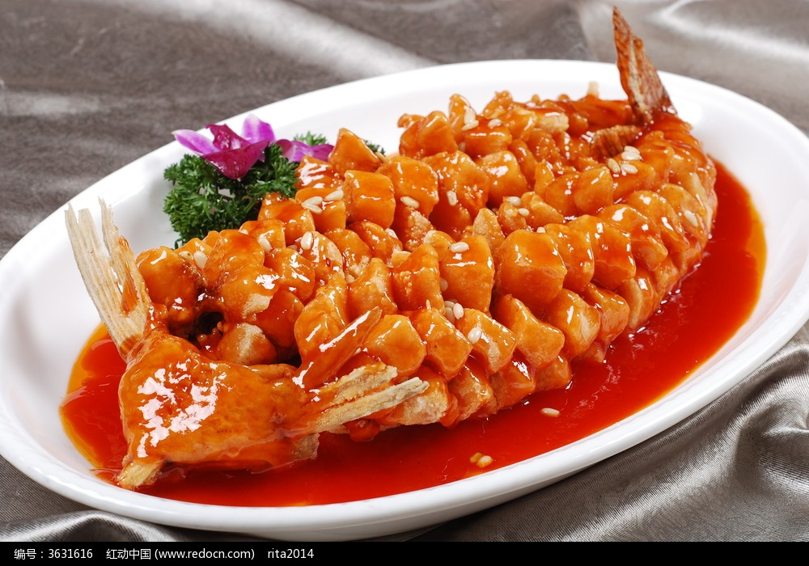
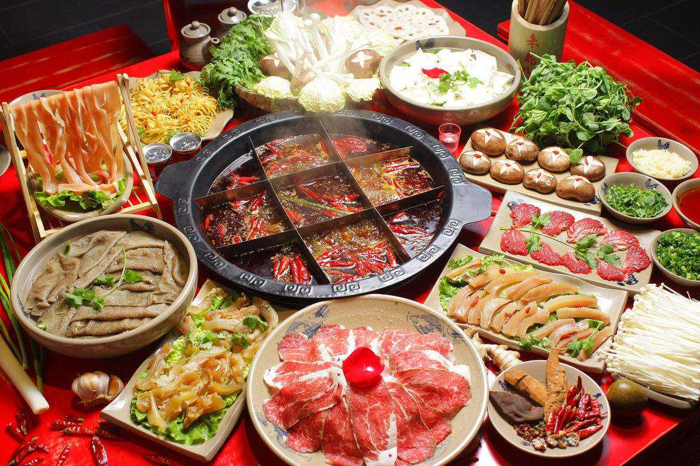

Food
Food is the one of most things for Chinese. In Chinese culture, when people meet neighbors and friends, we do not say "How are you." We always ask "Did you eat breakfast, lunch or dinner?" The most famous word in China is "Food is god!" We like eatting what can make us happy!
Chinese traditional food culture has a long history and there are many schools of cuisine in cooking. The history of Sichuan, Shandong, Guangdong, and Suzhou cuisines was earlier. Later, local cuisines such as Zhejiang, Fujian, Hunan, and Huizhou became more and more famous, and thus formed the “eight major cuisines” in China. They are Shandong cuisine, Sichuan cuisine, Cantonese cuisine, Su cuisine, Fujian cuisune, Zhejiang cuisine, Hunan cuisine and Anhui cuisine.
The Chinese invented fried (burst, glutinous), roasted (chicken, glutinous, simmer, halogen), fried (chicken, paste), fried (cooked), boiled (boiled, stewed, braised), steamed, baked (cured, smoked, air-dried), cold, dripping and other cooking methods used to make various dishes.
My Favorite Chinese Food-Top Four


Sweet And Sour Fish
Hot Pot